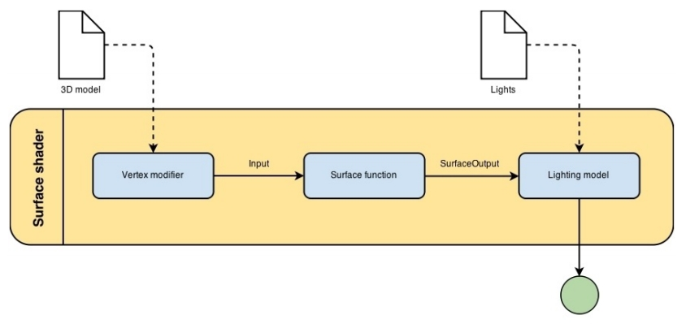
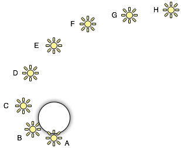
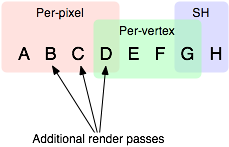
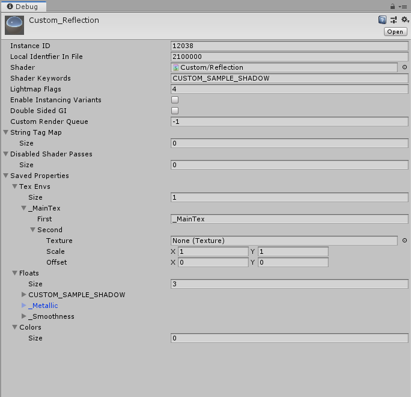

UnityShaderAndEffectCookbook
Table of Contents
- Basic
- Reflecting your world
- Shader Optimize
- LightingModel
- Screen Effect
- Skin Shader
- Normal Map
- ShaderForge
- CommandBuffer
- Q&A
- unity 坐标系是左手还是右手？
- SurfaceShader 中 如何定义多个 Pass，它们的执行与否，以及执行顺序？
- 如何实现半透明渲染？
- AlphaTest AlphaBlend 性能消耗
- Deferred Renderring，Deferred Shading，Deferred Lighting 是什么关系？
- 为什么 Unity 中 skybox 是在所有不透明物体和所有透明物体之间被绘制的？
- 为什么光照和表面的交互用乘法？
- 为什么光的衰减和离光源的距离的平方成反比？
- 内置着色器下载
- 贴图 UV 坐标系
- What is tangent.w? How to know whether it's 1 or -1? tangent.w VS unity_WorldTransformParams.w?
- 参考资料
本来只是一篇读书笔记，后来把 unity shader 相关的东西都加进来了。
<!– more –>
Basic
SurfaceShader 工作流程图

Properties
通过 Properties，可以将 shader 的一些参数暴露给编辑器进行设置。
Properties { _MyFloatValue("This is a Float", Float) = 1.5 _MyRangeValue("This is a Range", Range(0,10)) = 2.5 _MyColorValue("This is a ColorAmbient Color", Color) = (0.5,1,1,1) _MyVectorValue("This is a Vector", Vector) = (1,2,3,4) _My2DValue("This is a Texture 2D", 2D) = "white" {} _MyRectValue("This is a Texture Rect", Rect) = "white" {} _MyCubeValue("This is a Texture Cube", Cube) = "white" {} // 布尔也是浮点型数据，只是在材质面板上以开关的形式显示 // 开关只会用到两个数：0和1，开启即为1，关闭即为0 // 当开关开启，shader关键词会被设定为："property name" + "_ON"，必须大写 _INVERT_ON [Toggle] _Invert ("Invert color?", Float) = 0 // 或者重新指定一个shader关键词，括号内为shader关键词 [Toggle(ENABLE_FANCY)] _Fancy ("Fancy?", Float) = 0 // Blend mode values [Enum(UnityEngine.Rendering.BlendMode)] _Blend ("Blend mode", Float) = 1 // A subset of blend mode values, just "One" (value 1) and "SrcAlpha" (value 5). [Enum(One,1,SrcAlpha,5)] _Blend2 ("Blend mode subset", Float) = 1 // 关键词枚举也是浮点型数据，只是在材质面板上以下拉列表的形式显示 // shader关键词格式为："property name" + 下划线 + “枚举名称”，必须大写 // 但是最多支持9个枚举名称 [KeywordEnum(None, Add, Multiply)] _Overlay ("Overlay mode", Float) = 0 }
- 关于 shader 中的 Properties
- 关于 shader 中的多程序变量
SurfaceOutput
// unity4 struct SurfaceOutput { fixed3 Albedo; // 材质的颜色 fixed3 Normal; // 法线 fixed3 Emission; //The emissive color of the pixel 发出的颜色 fixed Alpha; //Alpha value for the pixel 片段的透明度 half Specular; //Specular power of the pixel 镜面高光系数 fixed Gloss; //Gloss intensity of the pixel 光泽强度 }; // unity5 struct SurfaceOutputStandard { fixed3 Albedo; fixed3 Normal; half3 Emission; fixed Alpha; half Occlusion; half Smoothness; half Metallic; }; struct SurfaceOutputStandardSpecular { fixed3 Albedo; fixed3 Normal; half3 Emission; fixed Alpha; half Occlusion; half Smoothness; fixed3 Specular; };
Input
| 名称 | 类型 | 意义 |
|---|---|---|
| uv_XXX | float2 | 存放贴图的 uv 坐标 |
| viewDir | float3 | 存放视觉方向（也就是眼睛方向，摄像机方向） |
| COLOR | float4 | 存放插值后的顶点颜色 |
| screenPos | float4 | 存放屏幕空间的坐标 |
| worldPos | float3 | 存放世界坐标 |
| worldRefl | float3 | 存放世界空间中的反射向量 |
| worldNormal | float3 | 如果 surface shader 没有修改 o.Normal 则存放世界空间的法向量 |
| worldRefl;INTERNAL_DATA | float3 | 如果 surface shader 修改了 o.Normal，则存放世界空间的反射向量。 |
| worldNormal;INTERNAL_DATA | float3 | 如果 surface shader 修改了 o.Normal，则存放世界空间的法向量。 |
Tips: 使用 worldRefl;INTERNAL_DATA 时， 通过 WorldReflectionVector (IN, o.Normal)来从法线贴图获得反射向量 使用 worldNormal;INTERNAL_DATA 时，通过 WorldNormalVector（IN, o.Normal）来从法线贴图获得法线
shader 的代码结构
https://docs.unity3d.com/Manual/SL-Reference.html
https://docs.unity3d.com/Manual/SL-Shader.html
Shader "GroupName/SubGroupName/ShaderName" { Properties { _MyFloatValue("This is a Float", Float) = 1.5 //...... } SubShader { Tags { "Queue" = "Transparent" "RenderType"="Opaque"} ZWrite Off ColorMask RGB // fixed functionality Pass { Name "RedObj" Color (1, 0, 0, 1) } // surface shader - surface shader 不能放在 Pass 中 // unity 会为 surface shader 自动生成 pass CGPROGRAM #pragma surface surf Lambert alpha:fade /** surface shader **/ ENDCG Pass { Name "FORWARD" Tags { "LightMode" = "ForwardBase" } // ...... } GrabPass { "TextureName" Name "" Tags {} //...... } Pass { //...... } } SubShader { //...... } //.... other subshader }
Properties
Properties 指定了 surface shader 中可供调节的变量，这些变量可以被显示在 Inspector 中。
SubShader
1 每个 Shader 都包含一个 SubShader 列表。SubShader 列表中至少要有一个 SubShader。当加载一个 Shader 时，Unity 会遍历其包含的 SubShader 列表，选择第一个用户机器所支持的 SubShader。如果没有 SubShader 被支持，则 Unity 会尝试使用 fallback shader。
2 一个 SubShader 定义了一个 Pass 列表，也就是说一个 SubShader 中包含多个 Pass，在 SubShader 中可以有选择地设置其中包含的所有 Pass 所公用的任何状态。此外 SubShader 还有额外的 Tags 可以被设置。
3 Unity 选定了 SubShader 后，当渲染一个物体时，SubShader 中的每个 Pass 会导致对该物体的一次渲染。
4 任何在 Pass 中可用的状态都可以放置在 SubShader 中，这样的话 SubShader 中的所有 Pass 都会公用该状态的设置。
SubShader Tags
渲染次序 Queue
可以通过 Queue tag 来确定物体的渲染顺序。Shader 决定了它的物体所属的渲染队列，这样就可以确保透明物体在不透明物体绘制之后再绘制。Unity 有四个预定义的渲染队列，但是默认的渲染队列之间可以定义更多的渲染队列。
每个渲染队列在内部是通过一个整型的索引来表示的。Background 为 1000，Geometry 为 2000，AlphaTest 为 2450，Transparent 为 3000，Overlay 为 4000。
小于等于 2500 的渲染队列，被当做不透明物体的渲染队列，并且可以调整物体的渲染顺序来达到最佳性能。更高的渲染队列被认为是透明物体的渲染队列，并且物体依据距离来排序，从最远的物体开始渲染直到最近的物体。Skyboxes 是在所有不透明物体和所有透明物体之间被绘制的。
Tags { "Queue" = "Transparent" }
- Background
这个渲染队列在任何其他队列之前被渲染。
- Geometry (默认的渲染队列)
不透明的几何体可以使用这个渲染队列
- AlphaTest
需要 Alpha 测试的几何体使用该队列。它独立于 Geometry 渲染队列，因为所有固体渲染之后，再渲染需要 alpha-tested 物体会更高效。(因为只对需要 Alpha 测试的物体开启 Alpha 测试，不需要 Alpha 测试的不会放在该队列，所以高效)
- Transparent
Geometry 和 AlphaTest 之后渲染的队列，该队列以从后到前的顺序渲染。需要 alpha-blended 的物体使用该队列。
- Overlay
该渲染队列可以实现覆盖效果。任何最终渲染的物体使用该队列。
- 自定义渲染队列
Tags { "Queue" = "Geometry+1" }
渲染类型 RenderType
RenderType 将 shaders 归类为很多不同的预定义的组。
Tags { "RenderType"="Opaque" "PerformanceChecks"="False" }
Shader Replacement 会用到该设置。
https://docs.unity3d.com/Manual/SL-ShaderReplacement.html
有时候通过该设置来制作摄像机的深度贴图。/Manual/SL-CameraDepthTexture.html
DisableBatching
有些 Shader 在 DrawCallBatching 下是不可用的，因为 DrawCallBatching 会将所有的几何体变换到世界空间，因此本地空间信息会丢失。
Tags {"DisableBatching" = "True"} // 为该 shader 始终禁止 Batching Tags {"DisableBatching" = "False"} // 为该 shader 开启 Batching Tags {"DisableBatching" = "LODFading"} // LOD Fading 开启时，禁止 Batching
其他的一些 tag
ForceNoShadowCasting IgnoreProjector CanUseSpriteAtlas PreviewType
SurfaceShader 编译指令
surface shader 被放置在 CGPROGRAM … ENDCG 块中。有两点需要注意：
1 surface shader 必须放在 SubShader 块中，不能放在 Pass 中。Unity 会通过编译将其放在不同 Pass 中。
2 使用下面的指令来指明一个 surface shader
#pragma surface surfaceFunction lightModel [optionalparams]
Optional Parameters
透明和 alpha 测试
透明和 alpha 测试通过 alpha 和 alphatest 指令来控制。透明通常有两种：传统的 alpha 混合 或者 更物理拟真的预乘混合（这种方式允许半透明表面保持合适的镜面反射）。开启半透明可以使生成的 surface shader 代码包含混合命令；反之开启 alpha cutout 将会在生成的片段着色器中，基于给定的值，执行片段丢弃。
| alpha 或 alpha:auto | 为普通光照函数选取透明渐变 并且 为基于物理的光照函数选取预乘混合 |
| alpha:blend | 开启 alpha 混合 |
| alpha:fade | 开启传统的透明渐变 |
| alpha:premul | 开启预乘 alpha 透明 |
| alphatest:VariableName | 开启 alpha 镂空 |
| keepalpha | 使用该选项可以允许保持光照函数中的 alpha 值即使是不透明 surface shader |
| decal:add | |
| decal:blend |
关于 keepalpha:
无论从光照计算返回的或从 output 结构体中输入的 alpha 值为多少，默认情况下不透明 surface shader 都会将 1.0 写入 alpha 通道，而 keepalpha 选项可以允许保持光照函数中的 alpha 值。
关于预乘混合可以查看以下文档：
https://developer.nvidia.com/content/alpha-blending-pre-or-not-pre
用户自定义修改函数
用户自定义修改函数可以用来修改或计算输入的顶点数据，或者修改最终计算出来的片段颜色
| vertex:VertexFunction | 自定义顶点修改函数 |
| finalcolor:ColorFunction | 自定义最终颜色修改函数 |
| finalgbuffer:ColorFunction | 自定义延迟渲染来修改 gbuffer 内容 |
| finalprepass:ColorFunction |
阴影和曲面细分
| addshadow | 产生一个阴影投射阶段 |
| fullforwadshadows | 在正向渲染中支持所有类型的阴影 |
| tessellate:TessFunction |
代码生成选项
| exclude_path:deferred | |
| exclude_path:forward | |
| exclude_path:prepass | |
| noshadow | |
| noambient | |
| novertexlights | |
| nolightmap | |
| nodynlightmap | |
| nodirlightmap | |
| nofog | |
| nometa | |
| noforwardadd |
其他选项
| softvegetation | 只有柔软植物开启才执行该 surface shader |
| interpolateview | |
| halfasview | |
| approxview | |
| dualforward |
LOD
LOD 很简单，它是 Level of Detail 的缩写，在这里例子里我们指定了其为 200（其实这是 Unity 的内建 Diffuse 着色器的设定值）。这个数值决定了我们能用什么样的 Shader。在 Unity 的 Quality Settings 中我们可以设定允许的最大 LOD，当设定的 LOD 小于 SubShader 所指定的 LOD 时，这个 SubShader 将不可用。Unity 内建 Shader 定义了一组 LOD 的数值，我们在实现自己的 Shader 的时候可以将其作为参考来设定自己的 LOD 数值，这样在之后调整根据设备图形性能来调整画质时可以进行比较精确的控制。
VertexLit 及其系列 = 100
Decal, Reflective VertexLit = 150
Diffuse = 200
Diffuse Detail, Reflective Bumped Unlit, Reflective Bumped VertexLit = 250
Bumped, Specular = 300
Bumped Specular = 400
Parallax = 500
Parallax Specular = 600
Pass
Name
为 Pass 定义一个名称，这样就可以通过 UsePass 来引用它了。
UsePass "VertexLit/SHADOWCASTER"
注意： 不要在 Pass 定义的 shader 中，引用 Pass，unity 会直接 Crash
GrabPass
GrabPass 是一种特殊的 pass 类型。当物体将要被绘制时，它可以获取屏幕的内容并将其绘制到一张贴图中。这张贴图可以在后续 pass 中使用，来实现高级的基于图片的特效。
// 下面的方式会，将屏幕内容保存到_GrabTexture 贴图对象中。这种方式会为每个使用该 shader 的对象，执行一次屏幕抓取. GrabPass{ } // 下面的方式会，将屏幕内容保存到 MyGrabTex 贴图对象中。这种方式在一帧内，只为执行一次屏幕抓取。 GrabPass{ "MyGrabTex" }
Tags
Pass 使用 Tags 来告诉渲染引擎，什么时候、如何被渲染。
LightMode
LightMode tag 定义了 Pass 在光照管线中的角色。这些 tags 很少手动指定。
| Name | Detail |
|---|---|
| Always | 总是渲染，没有光照被应用 |
| ForwardBase | ForwardRendering 中被应用，环境光、主要的定向光、vertex/SH 光、光照贴图被应用 |
| ForwardAdd | ForwardRendering 中附加的基于像素的光照被应用，每个灯光一个 Pass |
| Deferred | DeferredRendring，渲染 g-buffer |
| ShadowCaster | 渲染物体的深度到阴影贴图或深度贴图中 |
| PrepassBase | legacy Deferred Lighting,渲染法线和镜面指数 |
| PrepassFinal | legacy Deferred Lighting,渲染最终颜色 |
| Vertex | legacy Vertex Lit rendering,当物体没有光照贴图，所有顶点光照被应用 |
| VertexLMRGBM | legacy Vertex Lit rendering,当物体有光照贴图，光照贴图按照 RGBM 编码(PC&console) |
| VertexLM | legacy Vertex Lit rendering,当物体有光照贴图，光照贴图按照 Double-LDR 编码（Mobile） |
Tags { "LightMode" = "ForwardAdd" }
RequireOptions
指定 Pass 在满足某些外部条件时才被渲染。
| Name | Detail |
|---|---|
| SoftVegetation | 在 Quality Settings 中开启 SoftVegetation 才渲染 |
Render State Setup
Pass 可以设置图形硬件的渲染状态。
| Name | Detial |
|---|---|
| Cull Back / Front / Off | 剔除 |
| ZTest (Less / Greater / LEqual / GEqual / Equal / NotEqual / Always) | 深度测试 |
| ZWrite (On / Off) | 深度缓存区写入 |
| Blend SrcFactor DstFactor | |
| Blend SrcFactor DstFactor, SrcFactorA DstFactorA | |
| ColorMask RGB / A / 0 / any combination of R, G, B, A | ColorMask 0 将关闭颜色缓冲区中所有通道的写入 |
| Offset OffsetFactor, OffsetUnits | 设置深度值的偏移 |
Stencil
- Syntax
- Ref refValue
- Comp 操作 != Aways 时，指定 Comp 操作比较的值
- Pass Fail ZFail 操作 = Replace 时，指定这些操作写入的值
- refValue 为 0-255 的整数值
- Comp 操作 != Aways 时，指定 Comp 操作比较的值
- ReadMask readMask
- 比较 refValue 和模板缓冲区中的值时，refValue 和 stencilBufferValue 都会先和 readMask 进行 &(与) 操作，然后再进行比较。
- comparisonFuncion(refValue&readMask, stencilBufferValue&readMask)
- readMask 的默认值为 255
- 比较 refValue 和模板缓冲区中的值时，refValue 和 stencilBufferValue 都会先和 readMask 进行 &(与) 操作，然后再进行比较。
- Comp comparisonFuncion
- 用于比较 refValue 和 stencilBufferValue 的函数
- comparisonFuncion 的默认值为 always
ComparisonFunction 说明 Greater 只有像素的 refValue 大于模板缓冲区中的值时，模板测试才通过 GEqual 只有像素的 refValue 大于等于模板缓冲区中的值时，模板测试才通过 Less 只有像素的 refValue 小于模板缓冲区中的值时，模板测试才通过 LEqual 只有像素的 refValue 小于等于模板缓冲区中的值时，模板测试才通过 Equal 只有像素的 refValue 等于模板缓冲区中的值时，模板测试才通过 NotEqual 只有像素的 refValue 不等于模板缓冲区中的值时，模板测试才通过 Always 模板测试始终通过 Never 模板测试始终不通过 - 用于比较 refValue 和 stencilBufferValue 的函数
- Pass stencilOperation
- 当模板测试和深度测试通过时, 对模板缓冲区执行的操作
- stencilOperation 的默认值为 keep
- 当模板测试和深度测试通过时, 对模板缓冲区执行的操作
- Fail stencilOperation
- 当模板测试失败时，对模板缓冲区执行的操作
- stencilOperation 的默认值为 keep
- 当模板测试失败时，对模板缓冲区执行的操作
- ZFail stencilOperation
- 当模板测试通过深度测试失败时，对模板缓冲区执行的操作
- stencilOperation 的默认值为 keep
StencilOperation 说明 Keep 保持模板缓冲区中内容不变 Zero 将 0 写入到模板缓冲区中 Replace 将 refValue 写入到模板缓冲区 IncrSat 模板缓冲区中的值+1，如果值已经为 255，则不变 DecrSat 模板缓冲区中的值-1，如果值已经为 0，则不变 Invert 将模板缓冲区的值逐位取反 IncrWrap 模板缓冲区中的值+1，如果值已经为 255，则变为 0 DecrWrap 模板缓冲区中的值-1，如果值已经为 0，则变为 255 - 当模板测试通过深度测试失败时，对模板缓冲区执行的操作
- Tips
- Comp Pass Fail ZFail
- CompFront PassFront FailFront ZFailFront 显示指定渲染几何体正面时，使用的模板缓冲区操作。
- CompBack PassBack FailBack ZFailBack 显示指定渲染几何体背面时，使用的模板缓冲区操作。
- Comp Pass Fail ZFail
- Ref refValue
- 参考资料
深度相关的状态
默认的深度相关状态是 ZWrite On 和 ZTest LEqual
ZTest Less（深度小于当前缓存则通过
ZTest Greater（深度大于当前缓存则通过）
ZTest LEqual（深度小于等于当前缓存则通过）
ZTest GEqual（深度大于等于当前缓存则通过）
ZTest Equal（深度等于当前缓存则通过）
ZTest NotEqual（深度不等于当前缓存则通过）
ZTest Always（不论如何都通过）
注意，ZTest Off 等同于 ZTest Always，关闭深度测试等于完全通过。
ZWrite On（开启深度写入）
ZWrite Off（关闭深度写入）
Blend
Blend Off 关闭混合（默认）
贴图
贴图过滤模式
- Bilinear 对于大多数应用，双线性过滤可以耗费不大，而且可以有效平滑贴图。
- Point 如果你在构建一个 2D 游戏，双线性过滤可能会导致模糊。这种情况下，你可以使用 Point 指定无过滤。
Aniso Level
当从一个很陡峭的角度看贴图，贴图采样很可能会产生锯齿。你可以将 AnisoLevel 设置的更高来减低锯齿。这通常对于地面和屋顶贴图很有效。
Unity Camera 渲染场景的流程
Unity's Rendering Pipline
Shaders 定义了一个物体看起来是怎样的，以及这个物体如何和光照交互。因为光照计算必须在 shader 中进行，并且可能有很多种类型的光照和阴影，所以编写高质量的可用的 shaders 将是一个复杂的任务。为了让这项工作变的简单，Unity 提供了 Surface Shaders，其中所有的光照、阴影、光照贴图，正向渲染、延迟渲染等事情都被自动化管理。
本小结内容翻译自 Unity 官方文档： SL-RenderPipeline.html RenderTech-ForwardRendering.html RenderTech-DeferredShading.html
Rendering Path
光照是如何被应用以及 shader 的哪些 Passes 被使用都依赖于使用了哪种 Rendering Path. shader 中的每个 Pass 通过 Pass Tags 来传达它的光照类型。
| 采用的 Rendering Path | 被使用的 Passes |
|---|---|
| Forward Rendering | ForwardBase and ForwardAdd |
| Deferred Shading | Deferred |
| legacy Deferred Lighting | PrepassBase and PrepassFinal |
| legacy Vertex Lit | Vertex, VertexLMRGBM and VertexLM |
上面的任何 Rendering Path，用来渲染 Shadows 或深度贴图时，ShadowCaster Pass 会被用到。
Forward Rendering path
ForwardBase pass 用于一次性渲染环境光，光照贴图，主要的定向光以及不重要的光照(Spherical Harmonics)。
ForwardAdd pass 用于任何附加的基于像素的光照。被该光照照明的每个物体都会调用一次该 Pass。
如果 Forward Rendering 被使用，但是 shader 中没有合适的 Passes（没有 ForwardBase 或 ForwardAdd 存在），则物体会被按照 Vertex Lit path 的方式渲染。
Forward Rendering Detail
依据光照对物体的影响，Forward Rendering path 使用一个或多个 Pass 来渲染这个物体。依据每个光照的不同设置和亮度，Forward Rendering 会对光照有不同的处理。
Implementation Detail
在正向渲染中，一些影响到每个物体的最亮的光照会基于每个像素来计算。然后，最多有 4 个点光照被基于每个顶点来计算。剩余的光照按照 Spherical Harmonics 方式来计算，该方法速度比较快，但是只是一种近似计算。
一个光照是否会被基于每个像素来计算依赖于下面几点：
1 光照的 RenderMode 属性被设置为 Not Important 将使用 per-vertex 或 SH 方式计算。
2 最亮的方向光总是使用 per-pixel 方式来计算的。
3 光照的 RenderMode 属性被设置为 Important 将使用 per-pixel 方式计算。
4 按照上面的方式，使用 per-pixel 方式计算的光照数目少于 QualitySetting 中 current Pixel Light Count 所设置的数量时，更多的光照会使用 per-pixel 方式来计算,从而减低明亮度。(光照是按照距离的平方衰减的，而顶点光照是线性插值，所以 per-vertex 会更亮)
Tips:
per-vertex 就是光照计算在顶点着色器中进行。
per-pixel 就是光照计算在片段着色器中进行。
SH 方式其实是计算光照的一种方法，这种计算方法是在顶点着色器中进行的。
使用 Forward Rendering 时，Unity 中的渲染处理在下面的 Passes 中进行：
Base Pass 应用于 per-pixel 方式的方向光照 和 所有 per-vertex/Spherical Harmonics 方式的光照。
其他的 per-pixel 方式的光照在附加的 Passes 中进行渲染，一个 Pass 对应每个光照。
例如，如果有一个物体被很多个光照所影响（下图 1 中的一个圆圈，被 A 到 H 个光照影响）：
我们假设光照 A 到 H 有相同的颜色和亮度，并且它们都设置 RenderMode 为 Auto。最亮的光将会使用 per-pixel 方式来计算（A 到 D）。
然后，最多 4 个光源会使用 per-vertex 方式来计算（D 到 G），最后剩余的光照使用 SH 方式来计算(G 到 H)。
如下图 2 所示，光照分组会有重叠。最后的使用 per-pixel 方式计算的光照会和使用 per-vertex 方式计算的结果混合，这样可以在物体运动或光照移动时减少“light popping”。


Base Pass
Base pass 使用一个 per-pixel 方式计算的方向光照和所有的 SH 方式计算的光照渲染物体。这个阶段也会添加任何光照贴图，环境光和发射光到 shader 中。该 Pass 中的方向光可以有阴影。注意光照贴图的物体不会从 SH 方式计算的光照中获得照明。
Additional Passes
Additional Passes 用来渲染影响到物体的每个额外的 per-pixel 方式计算的光照。在该 Pass 计算的光照不能有阴影效果。（所以 Forward Rendering 只支持一个方向光有阴影）
Performance Considerations
Spherical Harmonics 方式计算的光照渲染速度非常快。他们消耗很少的 CPU 资源，并且对于 GPU 基本是无消耗的（也就是说，Base Passes 总是计算 SH 方式计算的光照，但是，基于 SH 的工作方式，无论有多少光照按照 SH 方式计算，其消耗都是一样的）。
SH 方式计算光照的缺点有：
- SH 是基于物体顶点的，而不是基于片段的。这意味着他们不支持光照的 Cookies 或法线贴图。
- SH 是非常低频率的。你不能对 SH 方式计算的光照有有尖锐的光照变换。他们只会影响漫反射光照（对于镜面光来说频率太低了）
- SH 是非局部的。点光源、聚光灯使用 SH 方式计算时，若靠近某些表面时看起来会是错误的。
总的来说，SH 方式计算光照对于低动态的物体来说通常是效果很好的。
Deferred Shading path
Deferred Pass 用来渲染光照计算需要的所有的信息（在内置 shaders 中会渲染：diffuse color, specular color, smoothness, world space normal, emission）。它还会添加光照贴图，反射探针以及环境光照到 emission 通道。
Overview
当使用延迟渲染时，对于可以影响一个物体的光照数量没有限制。所有的光照都是按照 per-pixel 方式计算的,这就意味着他们都可以正确地和法线贴图交互。另外所有的光照都可以有 cookies 和阴影。
延迟渲染的优势是光照处理的开销和被照亮的像素数量成正比。这是由场景中的光的体积大小决定的和被照亮的物体的数目无关。所以，保持小体积的光照可以改善性能。延迟渲染还有高度的一致性和可预测性。每个光照的效果是基于每个像素计算的，所以不会有在大的三角形上的光照计算被分解。
延迟渲染的缺点是，对于反锯齿没有真正的支持，并且不能够处理半透明的物体（这类物体需要通过 Forward Rendering 来渲染）。不支持 Mesh Render 的 Receive Shadows 标记，对于剔除层 masks 的支持也很有限。你只能使用最多 4 个剔除 masks。也就是说，你的剔除层 mask 必须至少包含所有的层减去任意的 4 个层，所以 32 个层中的 28 个层必须被设置。否则你将会得到变花的图像。
Requirements
延迟渲染需要图形卡包含 Multiple Render Targets，Shader Model 3.0 或者更高，支持深度贴图以及双面的模板缓冲区。大多数 PC2005 年以后的显卡支持延迟渲染，包括 GeForce6 以及更高，RadeonX1300 以及更高，InterG45+以及更高。在移动设备中，由于 MRT 使用的格式延迟渲染支持很有限（一些支持多个渲染目标的 GPUs 仍然只支持很有限的位数）。
注意：在使用正交投影时，不支持延迟渲染。如果摄像机的投影模式被设置为正交投影，这些数值将被覆盖，并且摄像机将总是使用 Forward Rendering。
Performance Considerations
在延迟渲染中渲染实时光照的开销和被照明的像素数量成比例，而和场景的复杂程度无关。所以小的点光源或聚光灯开销非常小，如果场景中的物体将它们整个或部分遮挡，渲染它们的开销将更小。
当然，带阴影的光照会比没有阴影的光照开销更大。在延迟渲染中，对于每个产生阴影的光照，产生阴影的物体仍然需要被渲染一次或多次。此外，应用阴影的光照着色器比阴影关闭的有更高的渲染开销。
Implementation Details
物体的不支持延迟渲染的 shaders，将在延迟渲染结束后，使用 Forward Rendering 方式来渲染。
默认的 G-Buffer 按照下面方式布局：
| Name | 格式 | 用途 |
|---|---|---|
| RT0 | ARGB32 format | 漫反射颜色(RGB),不使用 A |
| RT1 | ARGB32 format | 镜面颜色(RGB),粗糙度(A) |
| RT2 | ARGB2101010 format | 世界空间法线量(RGB),不使用 A |
| RT3 | ARGB32 (non-HDR) | Emission+光照+光照贴图+反射探针 |
| ARGBHalf (HDR) format | ||
| Depth+Stencil | 深度和模板缓冲区 |
所以默认的 g-buffer 布局下，非高动态范围下每个像素占 160 位，高动态范围下每个像素占 192 位。
当 camera 不使用 HDR 时，Emission+光照 buffer(RT3)使用了对数编码要比通常使用的 ARGB32 贴图能提供更大的动态范围。
当 camera 使用 HDR 渲染时，如果没有为 Emission+lighting buffer（RT3）创建独立的渲染对象，替代的渲染目标将被用作 RT3，camera 将会渲染到替代的渲染目标中。
G-Buffer Pass
G-Buffer Pass 为每个物体渲染一次。漫反射和镜面颜色，表面平滑度，世界空间的法线，发射+环境+反射+光照贴图都被渲染到 g-buffer 贴图中。g-buffer 贴图被设置为全局的着色器属性，从而在可以被着色器在后面阶段访问(名称为 CameraGBufferTexture0 … CameraGBufferTexture3)
Lighting Pass
这个光照阶段会基于 g-buffer 和深度来计算光照。光照是在屏幕空间中计算的，所以光照花费的时间独立于场景的复杂度。光照被添加到发射缓冲区中。当对于场景的 Z buffer 测试开启时，和摄像机近平面没有相交的点光源和聚光灯会被当做 3D 形状来渲染。这使得部分或全部被遮挡的点光源或聚光灯的渲染开销很小。方向光和点光源聚光灯和近平面相交时，被当做全屏的方形面片来渲染。
如果一个光开启了阴影效果，他们也会在这个 Pass 中被渲染和应用。需要注意的是阴影并不是免费得来的；投影者需要被渲染并且一个更加复杂的光照着色器需要被应用。
唯一可用的光照模型是 Standard。如果想要一个不同的模型，你可以修改光照着色器的 Pass，将修改后的 Internal-DeferredShading.shader 版本从内置的 shaders 放到你自己的 Assets/Resources 目录下。然后在 Edit->Project Settings->Graphics 窗口中，选择“Deferred”下拉列表中的"Custum Shader"。然后修改着色器的选项将会显示出你正在使用的着色器。
Legacy Deferred Lighting path
官方都要遗弃了，就不用了解了。
PrepassBase pass 渲染法线和镜面指数；
PrepassFinal pass 将贴图、光照和发射材质属性组合起来渲染最终的颜色。所有的正式的光照被分开在屏幕空间中计算。
Legacy Vertex Lit Rendering path
因为顶点光照通常在不支持可编程渲染的平台上，Unity 无法创建多个 shader 变量来处理有光照贴图和没光照贴图的情况。所以为了处理有光照贴图和无光照贴图的物体，必须显式地写多个 Pass。
Vertex Pass 用于无光照贴图的物体。使用 Blinn-Phong 光照模型对所有的光照一次进行渲染。
VertexLMRGBM Pass 用于有光照贴图的物体，光照贴图按照 RGBM 编码（PC 和 consoles 平台）。没有实时的光照被应用，Pass 只是组合了贴图和光照贴图。
VertexLMM Pass 用于有光照贴图的物体，光照贴图按照 double-LDR 编码（mobile 平台）。没有实时的光照被应用，Pass 只是组合了贴图和光照贴图。
RenderQueue And z-depth
RenderQueue 是用来控制渲染顺序的。系统内置了下面的渲染队列 Background(1000) Geometry(2000) AlphaTest(2450) Transparent(3000) Overlay(4000)。索引值小的队列先渲染。
z-depth 是表示被渲染的片段离摄像机的距离。渲染的时候会依据深度测试函数来比较此时被渲染的片段的 z-depth 值和当前 z-buffer 中的 z-depth 值，测试通过以后，该片段的颜色才会被写入。
shader 中 RenderQueue 设置
{ "Queue" = "Geometry+1" }
Misc
Shader Variants
Inspector 查看当前开启的变体
Inspector 切换到 Debug 模式后，可以查看和编辑当前开启的变体

移除不使用的变体
#pragma multi_compile_fwdadd // will make all variants containing // "POINT" or "POINT_COOKIE" be skipped #pragma skip_variants POINT POINT_COOKIE
强制使用某个变体
方案 1
// Will set "_TINT_ON" shader keyword when set. [Toggle(_TINT_ON)] _Tint("Tint", Float) = 1 // 1 表示开启关键字 _TINT_ON // ...... #pragma multi_compile __ _TINT_ON
方案 2
#pragma multi_compile __ USE_RED #define USE_RED 1
运行时变体动态开关控制
- 任意通过下面一种都可以开启关键字:
Shader.EnableKeyword("USE_RED");
Materials.EnableKeyword("USE_RED"); - 只要有一种方式开启了关键字，另一种方式无论开启还是关闭关键字，关键字都开启
// shader 中定义的宏开关 #pragma multi_compile __ USE_RED // csharp 中控制控开关的代码 using System.Collections; using System.Collections.Generic; using UnityEngine; public class S04Keyword : MonoBehaviour { public Renderer mRenderer; public int caseNO = -1; void Update() { switch(caseNO) { case 1: Shader.EnableKeyword("USE_RED"); if(mRenderer!=null) { mRenderer.sharedMaterial.DisableKeyword("USE_RED"); } break; case 2: Shader.DisableKeyword("USE_RED"); if(mRenderer!=null) { mRenderer.sharedMaterial.EnableKeyword("USE_RED"); } break; case 3: if(mRenderer!=null) { mRenderer.sharedMaterial.DisableKeyword("USE_RED"); } Shader.EnableKeyword("USE_RED"); break; case 4: if(mRenderer!=null) { mRenderer.sharedMaterial.EnableKeyword("USE_RED"); } Shader.DisableKeyword("USE_RED"); break; case 5: if(mRenderer!=null) { mRenderer.sharedMaterial.DisableKeyword("USE_RED"); } break; case 6: Shader.DisableKeyword("USE_RED"); break; case 7: Shader.DisableKeyword("USE_RED"); break; default: break; } caseNO = -1; } }
shader_feature 和 multi_compile 的差别
// multi_compile 会生成所有变体 #pragma multi_compile _ _TEST_MULTI_COMPILE // shader_feature 只会生成材质中使用的变体，所以打包出来的App运行时，如果切换变体可能会导致效果出错。 #pragma shader_feature _ _TEST_SHADER_FEATURE
Shader 中的预编译指令
if else endif
// if #if (SHADER_TARGET < 30 || SHADER_API_GLES) #endif #ifdef UNITY_COLORSPACE_GAMMA #endif #if defined(UNITY_PASS_DEFERRED) && UNITY_ENABLE_REFLECTION_BUFFERS #endif #ifndef #endif #if !GLOSSMAP #endif #if !defined (UNITY_BRDF_PBS) #endif
define
#define MakeupPropertyNoBigTex(partName) \ float4 _##partName##TexUVArea, _##partName##Area; \ float _##partName##H, _##partName##S, _##partName##V; #define MakeupProperty(partName) \ MakeupPropertyNoBigTex(partName) \ float _##partName##_IsBigTex; \ UNITY_DECLARE_TEX2D_NOSAMPLER(_##partName##BigTex); #define DoChangeBaseColorHelper(CALC_SUB_PART_COL) \ fixed pairMask = 1-isPairPart * step(0.5, uv.x); \ uv.x = isPairPart * (step(uv.x, 0.5) * (1-uv.x) + step(0.5, uv.x) * uv.x) + (1-isPairPart)*uv.x; \ half4 tgrArea = partTexUVArea; \ GMapUVToAreaOut newUVArea = GUtil_MapUVToArea(uv, partArea); \ half2 partTexUV = lerp(tgrArea.xz, tgrArea.yw, newUVArea.uv); \ CALC_SUB_PART_COL \ subPartCol.xyz = ShiftColorByHSV(subPartCol.xyz, hsv); \ partMask = newUVArea.mask * subPartCol.w * aValue * pairMask; \ half3 newCol = lerp(oldCol*(1-partMask), subPartCol.xyz, partMask); \ return newCol;
multi_compile_fwdbase
// 使用 multi_compile_fwdbase 会引入如下变体 // Total snippets: 1 // ----------------------------------------- // Snippet #0 platforms ffffffff: Builtin keywords used: DIRECTIONAL LIGHTPROBE_SH SHADOWS_SHADOWMASK DYNAMICLIGHTMAP_ON LIGHTMAP_ON LIGHTMAP_SHADOW_MIXING DIRLIGHTMAP_COMBINED SHADOWS_SCREEN VERTEXLIGHT_ON 34 keyword variants used in scene: DIRECTIONAL DIRECTIONAL LIGHTPROBE_SH DIRECTIONAL LIGHTPROBE_SH SHADOWS_SHADOWMASK DIRECTIONAL DIRLIGHTMAP_COMBINED LIGHTMAP_ON DIRECTIONAL DIRLIGHTMAP_COMBINED LIGHTMAP_ON LIGHTPROBE_SH DIRECTIONAL DIRLIGHTMAP_COMBINED LIGHTMAP_ON LIGHTMAP_SHADOW_MIXING DIRECTIONAL DIRLIGHTMAP_COMBINED LIGHTMAP_ON LIGHTMAP_SHADOW_MIXING LIGHTPROBE_SH DIRECTIONAL DIRLIGHTMAP_COMBINED LIGHTMAP_ON SHADOWS_SHADOWMASK DIRECTIONAL DIRLIGHTMAP_COMBINED LIGHTMAP_ON LIGHTPROBE_SH SHADOWS_SHADOWMASK DIRECTIONAL DIRLIGHTMAP_COMBINED LIGHTMAP_ON LIGHTMAP_SHADOW_MIXING SHADOWS_SHADOWMASK DIRECTIONAL DIRLIGHTMAP_COMBINED LIGHTMAP_ON LIGHTMAP_SHADOW_MIXING LIGHTPROBE_SH SHADOWS_SHADOWMASK DIRECTIONAL SHADOWS_SCREEN DIRECTIONAL LIGHTPROBE_SH SHADOWS_SCREEN DIRECTIONAL LIGHTMAP_SHADOW_MIXING LIGHTPROBE_SH SHADOWS_SCREEN DIRECTIONAL LIGHTPROBE_SH SHADOWS_SCREEN SHADOWS_SHADOWMASK DIRECTIONAL LIGHTMAP_SHADOW_MIXING LIGHTPROBE_SH SHADOWS_SCREEN SHADOWS_SHADOWMASK DIRECTIONAL DIRLIGHTMAP_COMBINED LIGHTMAP_ON SHADOWS_SCREEN DIRECTIONAL DIRLIGHTMAP_COMBINED LIGHTMAP_ON LIGHTPROBE_SH SHADOWS_SCREEN DIRECTIONAL DIRLIGHTMAP_COMBINED LIGHTMAP_ON LIGHTMAP_SHADOW_MIXING SHADOWS_SCREEN DIRECTIONAL DIRLIGHTMAP_COMBINED LIGHTMAP_ON LIGHTMAP_SHADOW_MIXING LIGHTPROBE_SH SHADOWS_SCREEN DIRECTIONAL DIRLIGHTMAP_COMBINED LIGHTMAP_ON SHADOWS_SCREEN SHADOWS_SHADOWMASK DIRECTIONAL DIRLIGHTMAP_COMBINED LIGHTMAP_ON LIGHTPROBE_SH SHADOWS_SCREEN SHADOWS_SHADOWMASK DIRECTIONAL DIRLIGHTMAP_COMBINED LIGHTMAP_ON LIGHTMAP_SHADOW_MIXING SHADOWS_SCREEN SHADOWS_SHADOWMASK DIRECTIONAL DIRLIGHTMAP_COMBINED LIGHTMAP_ON LIGHTMAP_SHADOW_MIXING LIGHTPROBE_SH SHADOWS_SCREEN SHADOWS_SHADOWMASK DIRECTIONAL VERTEXLIGHT_ON DIRECTIONAL LIGHTPROBE_SH VERTEXLIGHT_ON DIRECTIONAL SHADOWS_SCREEN VERTEXLIGHT_ON DIRECTIONAL LIGHTPROBE_SH SHADOWS_SCREEN VERTEXLIGHT_ON DIRECTIONAL LIGHTMAP_SHADOW_MIXING SHADOWS_SCREEN VERTEXLIGHT_ON DIRECTIONAL LIGHTMAP_SHADOW_MIXING LIGHTPROBE_SH SHADOWS_SCREEN VERTEXLIGHT_ON DIRECTIONAL SHADOWS_SCREEN SHADOWS_SHADOWMASK VERTEXLIGHT_ON DIRECTIONAL LIGHTPROBE_SH SHADOWS_SCREEN SHADOWS_SHADOWMASK VERTEXLIGHT_ON DIRECTIONAL LIGHTMAP_SHADOW_MIXING SHADOWS_SCREEN SHADOWS_SHADOWMASK VERTEXLIGHT_ON DIRECTIONAL LIGHTMAP_SHADOW_MIXING LIGHTPROBE_SH SHADOWS_SCREEN SHADOWS_SHADOWMASK VERTEXLIGHT_ON
Reflecting your world
光学基础
反射：当光在两种物质分界面上改变传播方向又返回原来物质中的现象，叫做光的反射。
折射：光从一种透明介质斜射入另一种透明介质时，传播方向一般会发生变化，这种现象叫光的折射。
散射：光束通过不均匀媒质时，部分光束将偏离原来方向而分散传播，从侧向也可以看到光的现象，叫做光的散射。散射是多重折射和反射的结果。
Fresnel reflection
菲涅尔反射
“菲涅尔”是一个人的名字，因为他发现了一个有关反射的光学现象，这个现象就用这个人的名字命名了。那么，是什么现象呢？
就是反射/折射与视点角度之间的关系。如果你站在湖边，低头看脚下的水，你会发现水是透明的，反射不是特别强烈；如果你看远处的湖面，你会发现水并不是透明的，但反射非常强烈。这就是“菲涅尔效应”。 简单的讲，就是视线垂直于表面时，反射较弱，而当视线非垂直表面时，夹角越小，反射越明显。如果你看向一个圆球，那圆球中心的反射较弱，靠近边缘较强。不过这种过度关系被折射率影响。
如果不使用“菲涅尔效应”的话，则反射是不考虑视点与表面之间的角度的。 注意，在真实世界中，除了金属之外，其它物质均有不同程度的“菲涅尔效应”。
所谓菲涅尔反射就是用波动的理论来解释光的反射。 主要包括一些电磁场的边界传输条件，比如 P 矢量和 S 矢量的反射，菲涅尔用波动学说第一次从本质上解释了光的传播，而之前人们只能从宏观上进行试验，无法从微观的理论上获得支持。然而缺少微观理论支持的定律总是空虚的，随时都可能被推翻的。
如何模拟菲涅尔效应效果？
// rim 随视角和法线夹角的增大而增大 // saturate 函数的作用是把输入值限制到[0, 1] 之间 float rim = 1.0 - saturate(dot(o.Normal,normalize(IN.viewDir))); rim = pow(rim,_RimPower); o.Albedo = color_.rgb * _DiffuseTint.rgb; // 物体反射的颜色 随 rim 的增大而增大。即视角正对物体时，反射的颜色少，随着视角和物体法线夹角增大，反射的颜色增大。 o.Emission = (texCUBE(_Cubemap,IN.worldRefl).rgb * _ReflectAmount)*rim; o.Specular = _SpecPower;
参考资料
菲涅耳反射 互动百科:
http://www.baike.com/wiki/%E8%8F%B2%E6%B6%85%E5%B0%94%E5%8F%8D%E5%B0%84
菲涅耳方程 维基百科:
https://zh.wikipedia.org/wiki/%E8%8F%B2%E6%B6%85%E8%80%B3%E6%96%B9%E7%A8%8B
Everything has Fresnel en http://filmicworlds.com/blog/everything-has-fresnel/
Everything has Fresnel cn http://gad.qq.com/program/translateview/7195431
Shader Optimize
数据类型
| Type | Detial | Range | Usage |
|---|---|---|---|
| float | 32 位单精度浮点数 | 和通常编程中的 float 一样 | 存放物体坐标 |
| half | 16 位中精度浮点数 | –60000 to +60000,精度是小数点后 3 位 | 适合存放 UV 值，颜色值 |
| fixed | 11 位低精度浮点数 | 范围是[-2, 2]，精度是 1/256 | 可用于光照计算，颜色，单位向量 |
IEEE754 浮点数的表示方法。C 语言里对 float 类型数据的表示范围为-3.4*10^38～+3.4*10^38。double 为-1.7*10^-308~1.7*10^308，long double 为-1.2*10^-4932~1.2*10^4932.
| 类型 | 比特（位）数 | 有效数字 | 数值范围 |
|---|---|---|---|
| float | 32 | 6~7 | -3.4*10^38～+3.4*10^38 |
| double | 64 | 15~16 | -1.7*10^-308~1.7*10^308 |
| long double | 128 | 18~19 | -1.2*10^-4932~1.2*10^4932 |
究竟如何计算该范围，分析如下：
对于单精度浮点数（float）来说，符号位一位，指数位 8 位，尾数 23 位。指数能够表示的指数范围为-128~127。尾数为 23 位。
float 和 double 的精度是由尾数的位数来决定的。浮点数在内存中是按科学计数法来存储的，其整数部分始终是一个隐含着的“1”，由于它是不变的，故不能对精度造成影响。float：2^23 = 8388608，一共七位，这意味着最多能有 7 位有效数字，但绝对能保证的为 6 位，也即 float 的精度为 6~7 位有效数字；double：2^52 = 4503599627370496，一共 16 位，同理，double 的精度为 15~16 位。
其中负指数决定了浮点数所能表达的绝对值最小的非零数；而正指数决定了浮点数所能表达的绝对值最大的数，也即决定了浮点数的取值范围。float 的范围为-2^128 ~ +2^128，也即-3.40E+38 ~ +3.40E+38；double 的范围为-2^1024 ~ +2^1024，也即-1.79E+308 ~+1.79E+308。
以 float 为例，如下表
| 符号 | 尾数 | 指数 |
|---|---|---|
| 1 | 23 | 8 |
| 数符（+-） | 小数部分（决定精度） | -127~128 指数（决定范围） |
例如：
+1.1111111111111111111111*2^127（小数点后面 23 个 1，由于尾数的范围 1～2，其最高位总为 1，故只需存取小数部分，所以小数为是 23 位 1），约等于 2*2^127=3.4*10^38。为 3.4*10^38 负数亦然。
Double 的计算与此类似，double 的符号位为 63 位，指数为 62～52 位，共 11 位。表示的范围为-1024～1023。尾数为 51～0。表示的范围为+1.1111111111111111..11111*2^1023（小数点后面 52 个 1）为 1.7*10^308。负数亦然。
SL-DataTypesAndPrecision
https://www.jianshu.com/p/c1ad09b690b2
https://blog.csdn.net/KLFTESPACE/article/details/81150481
noforwardadd
该选项基于一个开关来自动告诉 Unity，任何采用该着色器的物体只从一个单一的方向光接收每个像素的光照。该着色器计算的其他光照将使用 SH 方式计算。
#pragma surface surf SimpleLambert noforwardadd
exclude_path
exclude_path:deferred, exclude_path:forward, exclude_path:prepass
不为指定渲染方式(Deferred Shading, Forward , Legacy Deferred)生成代码。
#pragma surface surf SimpleLambert exclude_path:prepass
nolightmap
关闭该 shader 的所有光照贴图支持。
#pragma surface surf SimpleLambert noforwardadd nolightmap halfasview exclude_path:prepass
halfasview
用 halfDir 代替 viewDir 作为光照函数的参数传入 shader。
使用 UnityObjectToClipPos 代替 mul(UNITY_MATRIX_MVP,v.vertex)
UnityObjectToClipPos 的效率要比 mul(UNITY_MATRIX_MVP,v.vertex)高。
LightingModel
请参考 LightingModel.org 这篇文档。
Screen Effect
概述
屏幕特效特效就相当于对最终显示图片到显示器之前的图片进行 PS 处理。具体处理每个像素的过程会通过一个 Shader 来进行，进行处理的时机是 Camera.OnRenderImage 被触发的时候，而 Graphics.Blit 可以将处理结果生效。
处理每个像素的 Shader 通常会使用下面的一些配置：
#pragma vertex vert_img // 使用系统内置的函数 #pragma fragment frag // 具体处理过程在 frag 中实现 #pragma fragmentoption ARB_precision_hint_fastest // 上面这个参数用来指定片段着色器计算精度采用快速模式 // http://forum.unity3d.com/threads/pragma-fragmentoption-arb_precision_hint_fastest-any-documentation-about-this.294465/
明度 亮度 饱和度 对比度
明度（Brightness）是眼睛对光源和物体表面的明暗程度的感觉，主要是由光线强弱决定的一种视觉经验。
亮度（Luminance）是指发光体（反光体）表面发光（反光）强弱的物理量。
饱和度（Saturation）是指色彩的鲜艳程度，也称色彩的纯度。饱和度取决于该色中含色成分和消色成分（灰色）的比例。含色成分越大，饱和度越大；消色成分越大，饱和度越小。纯的颜色都是高度饱和的，如鲜红，鲜绿。混杂上白色，灰色或其他色调的颜色，是不饱和的颜色，如绛紫，粉红，黄褐等。完全不饱和的颜色根本没有色调，如黑白之间的各种灰色。
对比度（Contrast）指的是一幅图像中明暗区域最亮的白和最暗的黑之间不同亮度层级的测量，差异范围越大代表对比越大，差异范围越小代表对比越小，好的对比率 120:1 就可容易地显示生动、丰富的色彩，当对比率高达 300:1 时，便可支持各阶的颜色。但对比率遭受和亮度相同的困境，现今尚无一套有效又公正的标准来衡量对比率，所以最好的辨识方式还是依靠使用者眼睛。
MotionBlur 的实现
运动模糊产生的原因是 一个视觉信息采集周期内，同一个采集点接收到了多个信息，这些信息在同一个运动方向上依次排列。
fixed4 frag (v2f i) : SV_Target { float4 col = tex2D(_MainTex, i.uv); if (!_isStopBlur) { // uvOffset 就是运动方向的反方向 fixed2 uvOffset = i.uv - _Center; for (int iterCount = 1; iterCount < _IterNumber; ++iterCount) { // 取出倒数第 iterCount 个信息，并累加到 col 中 col += tex2D(_MainTex, i.uv+uvOffset*iterCount*_SpeedFactor); } // 对所有信息取平均值 col /= (float)_IterNumber; } return col; }
Skin Shader
请参考 SkinRendering.org 这篇文档。
Normal Map
Normal Map 又叫 Ramp Map，其实就是法线贴图。
UnpackNormal 的作用是将 0-1 范围的数值(法线贴图存储的颜色值)映射为-1-1 范围的数值（法线向量）。
ShaderForge
基本操作
删除连线
Alt+鼠标右键点击 连线的端点。（注意：点击连线无用）
ErrorFixed
在 iOS 平台下 Shader 出错
在 ShaderSettings 选项下勾选 iOS 平台支持。
CommandBuffer
Q&A
unity 坐标系是左手还是右手？
unity 为左手坐标系
DirectX 为左手坐标系
OpenGL 为右手坐标系
SurfaceShader 中 如何定义多个 Pass，它们的执行与否，以及执行顺序？
定义多个 Pass
定义多个 Pass 的方法，参考如下开源项目：
https://github.com/inbgche/ShaderMixingSample
为了防止项目被 delete，我 fork 了一份，地址如下：
https://github.com/wolfand11/ShaderMixingSample
Rules for Multi-pass Shaders in Unity (原文不存在时，可去有道云笔记中寻找备份)
https://albertshih.blogspot.jp/2014/11/rules-for-multi-pass-shaders-in-unity.html
Pass 是否执行
可以通过配制每个 pass 的 LightMode Tag，来选择具体执行哪些 pass。
以 surface shader 举例说明：
surface shader 展开来后，可以看到如下 pass。
pass{ Tags{"LightMode""Vertex"} }
pass{ Tags{"LightMode""ForwardBass"} }
pass{ Tags{"LightMode"="Deferred"} }
这三个 pass 是相互排斥的，永远只可能执行其中一个 pass。
那 unity 是根据什么来选择执行哪个 pass 的呢？
unity 通过摄像机下的 Rendering path 来选择相应的 pass。
Rendering path= Legacy Vertex Lit 时，选择"LightMode""Vertex"的 pass。ForwardBass 与 Deferred 将不会被执行。
Rendering path ForwardBass 时，优先选择"LightMode""ForwardBass"的 pass，ForwardBass 不存在时，选择 Vertex。Deferred 将不会被执行。
Rendering path Deferred 时，优先选择"LightMode"="Deferred"的 pass，Deferred 不存在时，选择 ForwardBass，ForwardBass 不存在时选择 Vertex。
没有 LightMode Tag 时，Pass 执行与否如何决定
无 LightModeTag 时，Pass 都会执行，且按照顺序从上到下依次执行
Pass 的执行顺序
多个 Pass 的执行顺序是，从上到下依次进行的
参考上面的 ShaderMixingSample 可以深入了解
Enable Disable Pass
void SetShaderPassEnabled(string passName, bool enabled)
注意：参数 passName 是 RenderMode Tag 对应的值。
material.SetShaderPassEnabled("Always", useDistortion); material.SetShaderPassEnabled("ShadowCaster", useShadows);
Tips
- 需要注意的是，SurfaceShader 中定义多个 Pass 时，不需要写 Pass{}，因为 SurfaceShader 编译时，会自动添加 Pass{}.具体信息可以参考如下链接：
http://www.cnblogs.com/wantnon/p/4456787.html
https://forum.unity.com/threads/achieving-a-multi-pass-effect-with-a-surface-shader.96393/
- 需要注意的是，SurfaceShader 中 LightMode Tag 会被忽略，LightMode Tag 只能在 Pass 中使用，SurfaceShader 编译时，会自动添加 Pass{}
https://forum.unity.com/threads/lightmode-always-not-ignore-lighting-in-surface-shader.446692/
如何实现半透明渲染？
- SurfaceShader https://blog.csdn.net/candycat1992/article/details/28630459
- CG https://en.wikibooks.org/wiki/Cg_Programming/Unity/Transparency
- Unity 中的透明效果之开启深度写入的半透明效果 https://blog.csdn.net/u012079615/article/details/78670340
AlphaTest AlphaBlend 性能消耗
AlphaBlend 和 AlphaTest 效果不是等价的。
iOS 平台上 AlphaTest 性能比较费的原因是，当一个执行 AlphaTest 的图元被提交时，early depth 测试（类似于 PowerVR 的隐藏表面移除 HSR) 可以忽略被遮挡的片段（有其他片段离摄像机更近）。不透明图元可以在该管线阶段同时执行深度写入，而需要执行 AlphaTest 的图元此时无法写入深度缓冲区，只有片段着色器执行完后，片段的可见性明确后，才可以写入深度缓冲区。这些被延迟的深度写入会影响性能，因为后续的图元无法被处理，直到需要执行 AlphaTest 的图元的深度数据被更新到深度缓存区中。
Deferred Renderring，Deferred Shading，Deferred Lighting 是什么关系？
Deferred Rendering
Deferred Rendering 只是延迟渲染算法的统称。延迟渲染分很多不同类型，Deferred Shading 和 Deferred Lighting 等才是具体的延迟渲染算法。
Deferred Shading
在 3D 计算机图形学领域中，延迟着色是一种屏幕空间着色技术。之所以被称作延迟的是因为在第一阶段的 vertex 和 pixel 着色器中并没有真正执行渲染，渲染被延迟到了第二个阶段。
延迟着色第一个阶段的渲染，只是将着色计算需要的数据进行收集。通过渲染到贴图这种方式，将 Positions，normals 以及每个表面的材质等信息被渲染到 G-buffer 中。
延迟着色第二个阶段的渲染，在一个 pixel 着色器中，利用前一阶段生成的 G-buffer，在屏幕空间中，来计算每个像素的直接和间接光照。
Deferred Lighting
Deferred lighting 是对 Deferred Shading 的一种修改。该技术使用了三个阶段来代替延迟着色中的两个阶段。
延迟光照第一阶段的渲染，只有计算每个像素光照所必须的属性会被写入 G-Buffer.
延迟光照第二阶段的渲染，在屏幕空间中，该延迟渲染阶段只输出漫反射和镜面反射光照数据(将这些数据写入到 L-Buffer)
延迟光照第三阶段的渲染，在 L-Buffer 的基础上重新渲染场景并进行最终的渲染
参考资料
http://chengkehan.github.io/DeferredRendering.html
http://blog.csdn.net/bugrunner/article/details/7436600
https://en.wikipedia.org/wiki/Deferred_shading
Deferred Shading https://docs.unity3d.com/Manual/RenderTech-DeferredShading.html
Deferred Lighting https://docs.unity3d.com/Manual/RenderTech-DeferredLighting.html
为什么 Unity 中 skybox 是在所有不透明物体和所有透明物体之间被绘制的？
一般来讲 skybox 可以在 background 渲染队列中进行渲染，但是，这样会导致像素的 OverDraw，因此在不透明物体后再绘制 Skybox 可以减少这种 OverDraw。
为什么光照和表面的交互用乘法？
物体的颜色表示的是物体对光照中不同频率光的吸收和反射，例如 白色的光照射红色的物体，红色物体会吸收绿光和蓝光，反射红光，所以看到物体是红色的。
这种作用方式可以用乘法表示，物体颜色(1,0,0) * 光照颜色(1,1,1) = 看到颜色(1, 0, 0)
为什么光的衰减和离光源的距离的平方成反比？
在点光源，聚光灯等模拟中，通常会为光照添加衰减，这个衰减系数和光源距离的平方相关，具体原因查看下面文章。
基于物理着色：BRDF https://zhuanlan.zhihu.com/p/21376124
内置着色器下载
Unity 内置 Shader 可以在官网下载：https://unity3d.com/cn/get-unity/download/archive
进入上面页面，点击下载按钮的下拉菜单，选择 内置着色器。
贴图 UV 坐标系
unity 中贴图 UV 坐标系原点在 左下角。
unreal 中贴图 UV 坐标系原点在 左上角。
photoshop 中贴图 UV 坐标系原点在 左上角。
What is tangent.w? How to know whether it's 1 or -1? tangent.w VS unity_WorldTransformParams.w?
参考资料
Unity3D Shader 入门 https://onevcat.com/2013/07/shader-tutorial-1/